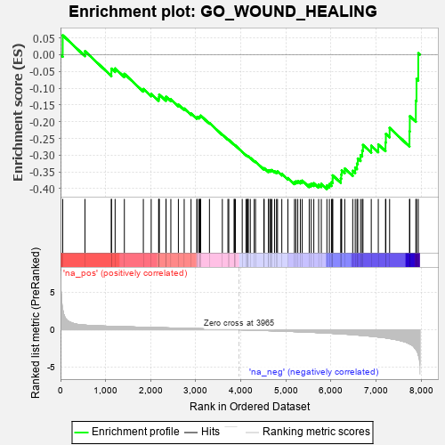
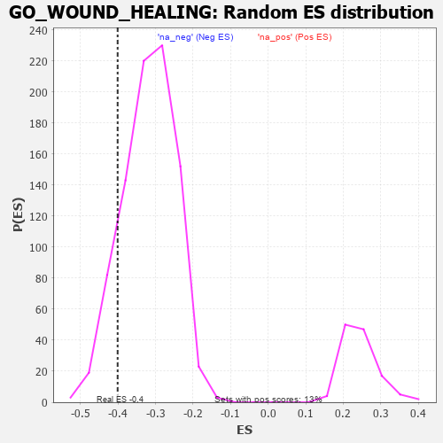

| | | Dataset | 7d |
| Phenotype | NoPhenotypeAvailable |
| Upregulated in class | na_neg |
| GeneSet | GO_WOUND_HEALING |
| Enrichment Score (ES) | -0.40103206 |
| Normalized Enrichment Score (NES) | -1.2613219 |
| Nominal p-value | 0.12342857 |
| FDR q-value | 0.52669567 |
| FWER p-Value | 1.0 |
Table: GSEA Results Summary

Fig 1: Enrichment plot: GO_WOUND_HEALING
Profile of the Running ES Score & Positions of GeneSet Members on the Rank Ordered List
| PROBE | GENE SYMBOL | GENE_TITLE | RANK IN GENE LIST | RANK METRIC SCORE | RUNNING ES | CORE ENRICHMENT | | 1 | TGFB3 | | | 49 | 2.654 | 0.0580 | No |
| 2 | SRF | | | 542 | 0.615 | 0.0105 | No |
| 3 | SRC | | | 1128 | 0.459 | -0.0526 | No |
| 4 | FIBP | | | 1129 | 0.458 | -0.0415 | No |
| 5 | RCOR1 | | | 1211 | 0.445 | -0.0410 | No |
| 6 | P2RY1 | | | 1416 | 0.407 | -0.0570 | No |
| 7 | GATA4 | | | 1837 | 0.330 | -0.1022 | No |
| 8 | RAF1 | | | 2011 | 0.303 | -0.1168 | No |
| 9 | DDR1 | | | 2176 | 0.280 | -0.1309 | No |
| 10 | SYK | | | 2186 | 0.278 | -0.1253 | No |
| 11 | C1QBP | | | 2189 | 0.278 | -0.1188 | No |
| 12 | ANO6 | | | 2339 | 0.255 | -0.1315 | No |
| 13 | DOCK8 | | | 2341 | 0.254 | -0.1255 | No |
| 14 | KDM1A | | | 2447 | 0.237 | -0.1331 | No |
| 15 | VAV3 | | | 2614 | 0.210 | -0.1490 | No |
| 16 | LMAN1 | | | 2743 | 0.192 | -0.1606 | No |
| 17 | FGFR2 | | | 2895 | 0.167 | -0.1757 | No |
| 18 | WNT4 | | | 3023 | 0.146 | -0.1883 | No |
| 19 | TLN1 | | | 3030 | 0.145 | -0.1855 | No |
| 20 | PROS1 | | | 3070 | 0.141 | -0.1871 | No |
| 21 | HDAC1 | | | 3086 | 0.138 | -0.1856 | No |
| 22 | RREB1 | | | 3099 | 0.137 | -0.1838 | No |
| 23 | GPX1 | | | 3109 | 0.135 | -0.1817 | No |
| 24 | SMAD3 | | | 3303 | 0.105 | -0.2036 | No |
| 25 | MAPK3 | | | 3589 | 0.062 | -0.2383 | No |
| 26 | NF1 | | | 3713 | 0.040 | -0.2529 | No |
| 27 | SYT11 | | | 3732 | 0.036 | -0.2543 | No |
| 28 | ITPK1 | | | 3851 | 0.020 | -0.2688 | No |
| 29 | DGKQ | | | 3856 | 0.020 | -0.2688 | No |
| 30 | DGKZ | | | 3879 | 0.015 | -0.2712 | No |
| 31 | TOR1A | | | 4030 | -0.013 | -0.2899 | No |
| 32 | MTOR | | | 4114 | -0.025 | -0.2999 | No |
| 33 | CRK | | | 4139 | -0.031 | -0.3022 | No |
| 34 | HNF4A | | | 4157 | -0.034 | -0.3035 | No |
| 35 | HPS5 | | | 4164 | -0.036 | -0.3034 | No |
| 36 | TIMP1 | | | 4209 | -0.043 | -0.3079 | No |
| 37 | USF1 | | | 4296 | -0.059 | -0.3174 | No |
| 38 | CD109 | | | 4325 | -0.064 | -0.3194 | No |
| 39 | ILK | | | 4510 | -0.096 | -0.3404 | No |
| 40 | WNT5B | | | 4517 | -0.098 | -0.3388 | No |
| 41 | ADTRP | | | 4612 | -0.120 | -0.3478 | No |
| 42 | GATA3 | | | 4614 | -0.120 | -0.3450 | No |
| 43 | MYLK | | | 4651 | -0.128 | -0.3465 | No |
| 44 | ITPR1 | | | 4661 | -0.130 | -0.3444 | No |
| 45 | PTK7 | | | 4687 | -0.136 | -0.3443 | No |
| 46 | FBLN1 | | | 4748 | -0.149 | -0.3483 | No |
| 47 | CD151 | | | 4791 | -0.156 | -0.3499 | No |
| 48 | P2RX4 | | | 4813 | -0.161 | -0.3486 | No |
| 49 | CAPZB | | | 4908 | -0.179 | -0.3562 | No |
| 50 | PDPK1 | | | 5043 | -0.207 | -0.3682 | No |
| 51 | ENPP4 | | | 5189 | -0.245 | -0.3807 | No |
| 52 | GPR4 | | | 5219 | -0.250 | -0.3783 | No |
| 53 | PTEN | | | 5262 | -0.261 | -0.3773 | No |
| 54 | CD9 | | | 5319 | -0.277 | -0.3777 | No |
| 55 | ITPR3 | | | 5361 | -0.288 | -0.3759 | No |
| 56 | TFPI2 | | | 5516 | -0.324 | -0.3876 | No |
| 57 | EHD1 | | | 5560 | -0.336 | -0.3849 | No |
| 58 | VPS45 | | | 5618 | -0.350 | -0.3837 | No |
| 59 | DGKI | | | 5725 | -0.384 | -0.3878 | No |
| 60 | TRPC6 | | | 5784 | -0.401 | -0.3854 | No |
| 61 | DOCK1 | | | 5908 | -0.438 | -0.3904 | Yes |
| 62 | SH2B1 | | | 5963 | -0.459 | -0.3862 | Yes |
| 63 | XBP1 | | | 6011 | -0.475 | -0.3806 | Yes |
| 64 | TRPC3 | | | 6035 | -0.483 | -0.3718 | Yes |
| 65 | RAC1 | | | 6036 | -0.484 | -0.3601 | Yes |
| 66 | SMAD2 | | | 6216 | -0.541 | -0.3697 | Yes |
| 67 | TPM1 | | | 6226 | -0.545 | -0.3577 | Yes |
| 68 | CDC42 | | | 6236 | -0.548 | -0.3455 | Yes |
| 69 | SYTL4 | | | 6304 | -0.578 | -0.3400 | Yes |
| 70 | DYSF | | | 6481 | -0.654 | -0.3465 | Yes |
| 71 | KANK1 | | | 6536 | -0.678 | -0.3370 | Yes |
| 72 | P2RX5 | | | 6576 | -0.699 | -0.3250 | Yes |
| 73 | VWF | | | 6593 | -0.706 | -0.3099 | Yes |
| 74 | RAB5A | | | 6655 | -0.741 | -0.2997 | Yes |
| 75 | PAK1 | | | 6691 | -0.757 | -0.2858 | Yes |
| 76 | EGFR | | | 6708 | -0.765 | -0.2693 | Yes |
| 77 | PLEC | | | 6892 | -0.864 | -0.2716 | Yes |
| 78 | MYH10 | | | 7048 | -0.966 | -0.2679 | Yes |
| 79 | MFN2 | | | 7208 | -1.081 | -0.2619 | Yes |
| 80 | KLKB1 | | | 7216 | -1.090 | -0.2364 | Yes |
| 81 | MSX2 | | | 7299 | -1.171 | -0.2185 | Yes |
| 82 | PLPP3 | | | 7740 | -1.876 | -0.2288 | Yes |
| 83 | CASP3 | | | 7747 | -1.902 | -0.1835 | Yes |
| 84 | FYN | | | 7881 | -2.622 | -0.1369 | Yes |
| 85 | CAV3 | | | 7896 | -2.739 | -0.0724 | Yes |
| 86 | ARRB1 | | | 7935 | -3.377 | 0.0046 | Yes |
Table: GSEA details [plain text format]

Fig 2: GO_WOUND_HEALING: Random ES distribution
Gene set null distribution of ES for GO_WOUND_HEALING